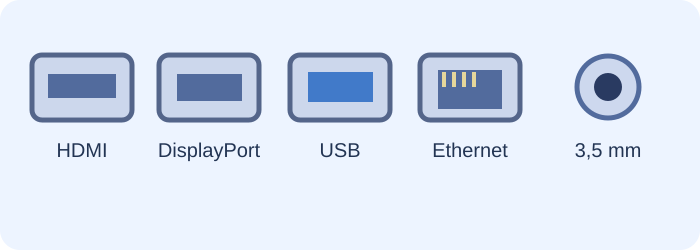

Anslut rätt
Titta på kontakterna och matcha åtta enheter med rätt anslutning och funktion.
Känn igen portarna

HDMI och DisplayPort används ofta för bild, USB för kringutrustning och Ethernet för nätverk.
Matchningsutmaning
Välj anslutning för varje enhet. Du får återkoppling när du rättar.